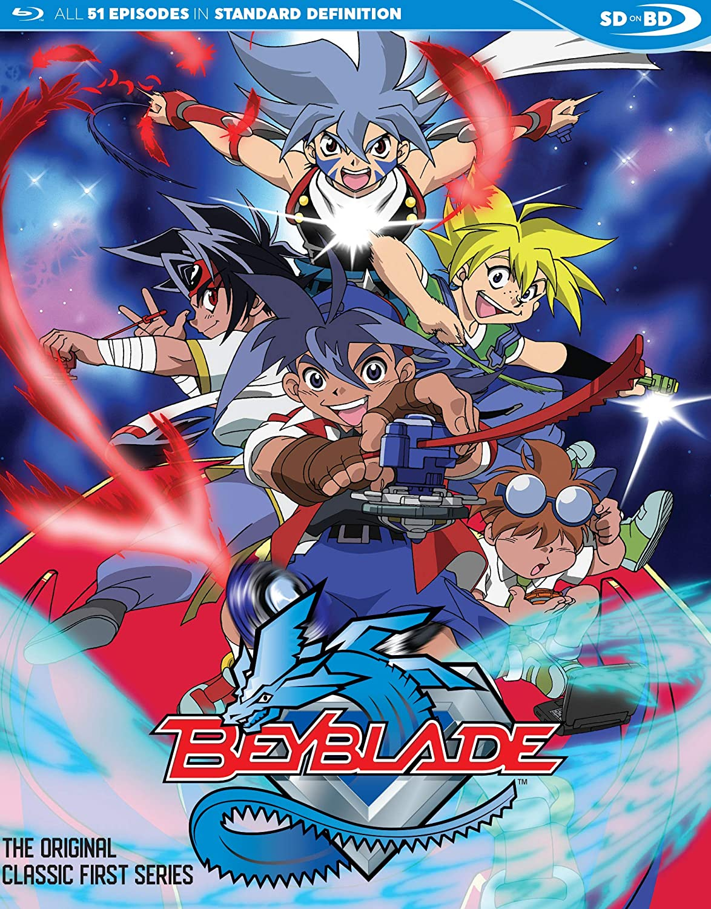
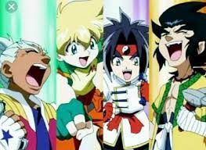

Facts page
Still Beyblade has huge popularity in all over the world, Most of the people play Beyblade tournaments l, and Beyblade was more popular in India and Latin American countries.
.jpg)
Beyblade is one of the world's most selling merchandising franchises, After pokemon games and Eugion cards Beyblades are the most selling items in the world.
.jpg)
In Beyblade's Manga, the Bakuten Shoot Beyblade was ended differently. In that Bakuten Shoot Beyblade series ending they showed that Tyson's Son is Battling with Kai's son.

Beyblade G Revolution was ended, when Tyson defeated brukulin, but in the climax, they are shown that Tyson is Battling with Kai and they don't show Who won the battle, Nobody knows why they don't reveal the winner of the final battle.
.jpg)
.Dizzi was created in English dubbed the Beyblade series. In the original Japanese Beyblade version, there is no character named Dizzi
.jpg)
Beyblade has a record in India, that is, Beyblade is the highest-rated anime series in India.
.jpg)
Tyson's name was derived from the name of the Creator of the Beyblade Manga series "Takao".
In the whole Beyblade anime series, Tyson is the only character that appears in every episode.
.jpg)